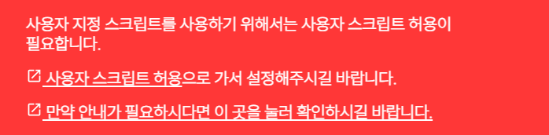
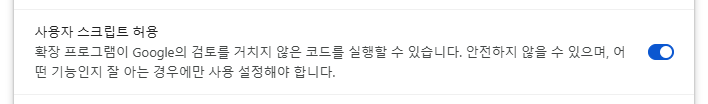
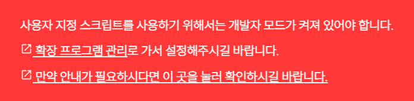
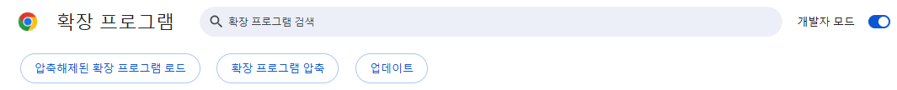

"chrome://extensions/?id=<확장프로그램 Id>"로 이동해주세요.
또는 확장프로그램의 제스처 설정창의 "사용자 지정 스크립트" 부분에 뜨는 경고창을 확인해주세요.
# 사용자 스크립트 허용하기
1

2
새로 열린 확장프로그램 세부정보 페이지에서 아래 사진과 같은 부분을 찾아 "사용자 스크립트 허용"을 눌러 켜짐을 확인하세요.

3
다시 확장프로그램의 페이지로 돌아가셔서 경고창이 사라짐을 확인하시고 스크립트 작성을 계속해주세요.
# 개발자 모드 켜기
1
"chrome://extensions"로 이동해주세요.
또는 확장프로그램의 제스처 설정창의 "사용자 지정 스크립트" 부분에 뜨는 경고창을 확인해주세요.
또는 확장프로그램의 제스처 설정창의 "사용자 지정 스크립트" 부분에 뜨는 경고창을 확인해주세요.

2
새로 열린 확장프로그램 관리 페이지에서 아래 사진과 같은 부분을 찾아 "개발자 모드" 버튼을 눌러 켜짐을 확인하세요.

3
다시 확장프로그램의 페이지로 돌아가셔서 경고창이 사라짐을 확인하시고 스크립트 작성을 계속해주세요.